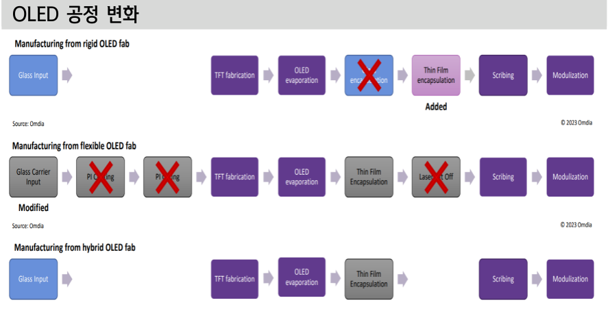

디스플레이 장비와 증설 — 8.6세대 OLED 4개 팹이 증착기 수요의 전부, 한국은 SDC 1곳뿐이고 LGD는 «FMM 없는 증착(FLiPP)»으로 우회
원천 한계
- 디스플레이 캐시 96건 중 2025년 13건·2026년 83건 → 실제 커버 기간은 2025-08~2026-11
- 장비 전용 리포트 0건 → 공정·장비 지도와 8.6세대 일정은 신한 섹터 리포트(2026-02-26) 1건에 크게 의존
- 검사·리페어 장비는 공급망 표 1행 외 원천 0건 ⚠. 장비 시장 전체 규모(연간 발주액)도 원문 없음 ⚠
한눈에 보기
결론
- 2026년 = 8.6세대 IT OLED 양산 원년: SDC A6(월 15K) 가동, BOE B16(월 32K)이 뒤따르고 Visionox·CSOT는 2027~2028년 (신한, 2026-02-26)
- 증착기는 캐논토키·선익시스템 양분. 8.6세대 15K 한 라인에 4조원 이상 → 패널사 몇 곳의 투자 결정이 장비 수요를 좌우 (신한, 02-26·10-23)
- LGD는 8.6세대 신규 투자 대신 FLiPP(금속마스크 없는 패터닝)·유휴 캐파 재가동 → 국내 신규 장비 발주는 2027년 투자 재검토가 변수 (메리츠 10-22; SK 10-08)
| 지표 | 값 | 출처 |
|---|---|---|
| 8.6세대 원장 | 2250×2500mm, 6세대의 약 2.2배 | (신한, 02-26) |
| 8.6세대 원가 경쟁력 | 6세대 대비 10~20% (수율 정상화 기준) | (신한, 02-26) |
| SDC A6 투자 | 4.1조원 / 월 15K | (신한, 02-26) |
| 중국 3사 8.6G 투자 | 295억~630억위안 / 팹 | (신한, 02-26) |
| LGD 2026 CAPEX | 2조원대 초반 (10월 가이던스) | (메리츠, 10-22) |
flowchart LR C["세트 고객 확보<br/>물량·스펙 협의"] --> K["패널사 CAPEX<br/>팹·Phase 단위"] K --> T["TFT 백플레인<br/>CVD·노광·식각·ELA"] T --> E["OLED 증착<br/>증착기·FMM"] E --> N["봉지<br/>TFE CVD·잉크젯"] N --> L["기판 처리<br/>LLO 또는 유리 식각"] L --> M["후공정<br/>커팅·합착·본딩"] M --> Q["검사·물류"]
구성: 신한(2026-02-26) 서플라이체인 표·«선 고객 확보, 후 CapEx» 논리를 엮음. 공정 순서는 Omdia 공정도(아래 ①장 그림) 기준
- 관련 노트: 00_디스플레이_index · 01_디스플레이_용어집 · 02_디스플레이_수요와전방 · 03_디스플레이_패널과기술 · 05_디스플레이_부품소재 · 06_디스플레이_시장규모모델 · 07_디스플레이_하우스시각_변경이력 · 08_디스플레이_트래킹캘린더
① 공정과 장비 지도
요약
- OLED 라인 = TFT 백플레인 → 유기물 증착 → 봉지 → 기판 처리 → 후공정. 장비 국산화는 TFT·봉지·후공정에서 높고 증착기는 일본·한국 2강
- 하이브리드 OLED(유리 기판+박막 봉지)는 PI 코팅·LLO를 빼고 유리 식각을 넣음 → 장비 구성이 바뀜
공정 흐름: Rigid·Flexible·Hybrid

출처: 신한투자증권(원자료 Omdia), 2026-02-26, p.47. 빨간 X = 해당 팹에서 빠지는 공정
| 팹 | 빠지는 공정 | 더해지는 공정 |
|---|---|---|
| Rigid 팹 전환 | 유리 봉지 | 박막 봉지(TFE), 유리 식각 |
| Flexible 팹 전환 | PI 코팅·경화, LLO | 글라스 캐리어 공정 수정 |
| 신규 Hybrid 팹 | — | 처음부터 효율 설계 가능 |
자료: 신한(2026-02-26) «Hybrid OLED 공정 장점» 표
공정별 장비 공급망 (패널사 라인 기준)
| 공정 | SDC 라인 | LGD 라인 |
|---|---|---|
| TFT 증착(CVD) | AKT·원익IPS·이루자 | AKT·주성엔지니어링·아바코 |
| 노광 | Nikon·Canon·케이씨텍·세메스 | Nikon·Canon·DMS |
| 건식 식각 | 아이씨디·원익IPS | 인베니아·아이씨디·TEL |
| ELA(결정화) | AP시스템 | JSW |
| 검사 | HB테크놀러지·Orbotech | Orbotech |
| OLED 증착기 | 캐논토키 | YAS·캐논토키·선익시스템 |
| FMM 인장기 | 힘스·DNP·웨이브일렉트로 | 한송네오텍·케이피에스·DNP |
| 봉지(TFE) | AMAT·원익IPS·Kateeva·AP시스템 | 주성엔지니어링·AMAT |
| LLO | AP시스템 | 이오테크닉스 |
| 커팅 | 이오테크닉스·필옵틱스 | 이오테크닉스·엘아이에스·필옵틱스 |
| 합착(라미) | 톱텍·제이스텍·SFA | 베셀·LG전자 PRI |
자료: 신한(2026-02-26) p.55 «디스플레이 서플라이체인». 세정·습식 식각·식각액 등 나머지 행은 05_디스플레이_부품소재·원문 참조. 점유율·단가는 원문 없음 ⚠
- 증착기만 해외 의존이 큼 → 6세대 때 AMAT·알박이 실패한 뒤 캐논토키·선익시스템 2강 체제 (신한, 02-26)
- 같은 공정이라도 SDC·LGD 공급사가 갈림 → 장비사 수주는 «어느 패널사가 증설하나»에 묶임
- 검사 장비는 공급사 이름 외 시장·기술 정보 원천 0건 ⚠
② 증착: FMM·ViP·잉크젯
요약
- 8.6세대 증착 방식은 셋. 양산성은 FMM이 압도적, ViP·잉크젯은 대형 세대 양산 사례가 아직 없음
- 증착 방식 선택 = 증착기 공급사 선택 → SDC(캐논토키)·BOE(선익) = FMM, Visionox = ViP, CSOT = 잉크젯
방식 비교
| 항목 | FMM | ViP | 잉크젯 |
|---|---|---|---|
| 원리 | 금속마스크 구멍으로 진공 증착 | 전면 증착 후 포토 식각 반복 | 노즐로 용액 RGB 인쇄 |
| PPI 한계 | 300~600 | 1700~2000 | 약 326 |
| 성숙도 | 상용화 완료 | 대형 세대 양산 준비 | 소규모 양산·수율 개선 중 |
| 탠덤 | 가능 | ⚠ 원문 없음 | 불가 |
| 약점 | 마스크 처짐·대형화 한계 | 식각 중 유기물 불순물 | 해상도·용액 소재 미성숙 |
| 대표 | SDC·LGD·BOE | Visionox | CSOT |
자료: 신한(2026-02-26) p.50~51, 비교표 원자료 Trendforce. 잉크젯 «소규모 양산»(Trendforce 표)과 «양산 성공사례 없음»(신한 본문)이 같은 리포트 안에서 엇갈림 ⚠
증착기 시장 구조
| 항목 | 내용 | 출처 |
|---|---|---|
| 8.6G 증착기 | 캐논토키·선익시스템 양분 | (신한, 02-26) |
| SDC A6 | 캐논토키, FMM 수평 증착 | (신한, 02-26) |
| BOE B16 P1 | 선익, 3,797.8억원 (24-06 공시) | (신한, 02-26) |
| BOE B16 P2 | 선익 수주 추정 (26-02 공시, 금액 미공개) | (신한, 02-26) |
| Visionox V5 P1 | AMAT ViP 증착기 (25-08 발주) | (학회, 05-06) |
| OLEDoS 증착기 | 선익 점유율 80% 이상, 대당 약 300억원 | (신한, 02-26) |
«학회» = 증권사 아님(대학 투자학회 리포트, 2026-05-06). 교차 확인 안 된 값은 참고만
- FMM: 유기물이 산소·수분에 약함 → 초고진공 챔버 필수. 마스크(FMM)·인장기가 별도 장비 시장을 만듦
- ViP: 마스크 없이 R→식각→G→식각→B 반복. 이론상 효율·수명 우위지만 식각 불순물 문제가 큼 (신한, 02-26)
- FLiPP(LGD, 2026-10 공개): FMM 없이 RGB를 독립 패터닝, 8세대 원장 인라인 연속 증착 → 기존 인프라 활용 가능 (신한 10-23; 메리츠 10-22)
- 투자·양산 시점·규모 미확정 (대신, 10-26) → «28년 이후 도입» 예상 (키움, 10-26)
- 선익 증착기 연간 생산 6~7대 → 수주 2대 안팎이 1년 매출을 가르는 구조 (신한, 02-26)
③ 봉지·LLO·식각·검사
요약
- 봉지는 Flexible·Hybrid 모두 박막 봉지(TFE) → CVD·잉크젯 장비 수요는 OLED 면적에 비례
- Hybrid 전환은 LLO 수요를 줄이고 유리 식각(박형화)을 새로 만듦 → 8.6세대 Hybrid 식각은 «라인 절반 가동»에서 출발
Hybrid OLED가 바꾸는 후공정
| 공정 | Flexible | Hybrid | 장비 영향 |
|---|---|---|---|
| 기판 | PI(폴리이미드) | 유리 | PI 코팅·경화 불필요 |
| 봉지 | TFE | TFE | 변화 없음 |
| 기판 분리 | LLO 필요 | 불필요 | LLO 장비 수요 축소 |
| 박형화 | 불필요 | 유리 식각 | 식각 라인 신설 |
자료: 신한(2026-02-26) p.46~47
식각 필요 캐파 (국내 1위 패널사, 그래프 판독)
| 라인 | 식각 필요 캐파(월) | 메모 |
|---|---|---|
| 5.5G Rigid | 약 158K | 중국향 Rigid 둔화 |
| 6G Hybrid | 약 15K | 아이패드 등 IT |
| 8.6G Hybrid | 약 12K | A6 신규 |
자료: 신한(2026-02-26) p.47 막대그래프 (그래프 판독, 근사). Rigid 대비 Hybrid 식각은 물량은 작고 단가가 높은 구조로 읽힘 — 단가 축 대상 품목이 원문에 명시 안 됨 ⚠
- 8.6세대 A6는 2026년 월 15K 중 절반(7.5K)만 우선 가동 → 나머지는 추가 고객 확보 뒤 (신한, 02-26; 현대차, 02-12)
- 7.5K 기준 2026년 8.6G IT OLED 출하 약 200만대 중반 (현대차, 02-12)
- 봉지 장비: SDC 라인 AMAT·원익IPS·Kateeva(잉크젯)·AP시스템, LGD 라인 주성·AMAT (신한, 02-26). 봉지 장비 시장 규모 ⚠ 원문 없음
- 검사: HB테크놀러지·Orbotech 외 정보 없음 ⚠
④ 8.6세대 증설 로드맵
요약
- 4개 팹(SDC·BOE·Visionox·CSOT) 합산 월 약 100K 계획 (내 계산: 15+32+32+22.5). 한국은 SDC A6 1곳
- 중국 3사는 2027~2028년 양산 → 증착기·봉지 장비 발주는 2025~2027년에 몰림. LGD·Tianma는 검토 단계
연도별 일정 (연도 위·분기 아래)
| 업체 | 팹·캐파(월) | 2023 | 2024 | 2025 | 2026 | 2027 | 2028 | ||||||||||||||||||
|---|---|---|---|---|---|---|---|---|---|---|---|---|---|---|---|---|---|---|---|---|---|---|---|---|---|
| 1Q | 2Q | 3Q | 4Q | 1Q | 2Q | 3Q | 4Q | 1Q | 2Q | 3Q | 4Q | 1Q | 2Q | 3Q | 4Q | 1Q | 2Q | 3Q | 4Q | 1Q | 2Q | 3Q | 4Q | ||
| SDC | 아산 A6 · 15K | ◆ 투자 4.1조 | P1 발주→반입 | P2 발주→반입 | ◆ P1 양산 | 7.5K 가동 | ◆ P2 양산 | ||||||||||||||||||
| BOE | 청두 B16 · 32K | ◆ 투자 | P1 발주→반입 | ◆ IT 양산 계획 | ◆ P1 양산(표) | P2 양산 | |||||||||||||||||||
| P2 발주→반입 | |||||||||||||||||||||||||
| Visionox | 허페이 V5 · 32K+ | ◆ 투자 | 발주→반입 (ViP) | 구축·램프 준비 | ◆ 양산 | ||||||||||||||||||||
| CSOT | 광저우 T8 · 22.5K | ◆ 투자 | P1 장비 발주 | 반입→구축 (잉크젯) | ◆ 양산 | ||||||||||||||||||||
| LGD | 8.6G 대신 FLiPP | ◆ 8.6G 보류 | ◆ 1.1조 투자 | ◆ FLiPP 공개 | 투자 재검토 | FLiPP 도입 예상 | |||||||||||||||||||
| Tianma | 8.6G | 투자 검토 중 | |||||||||||||||||||||||
| 장비 수주 | 증착기(선익) | ◆ BOE P1 3,798억 | ◆ BOE P2 | ||||||||||||||||||||||
진행·확정 ◆ 마일스톤 계획·예상 | 주황 = 지금(2026 4Q) | 굵은 세로선 = 연도 경계
자료: 신한(2026-02-26) p.50 타임라인·p.83 투자 계획 표, 메리츠(04-23·10-22), 키움(10-26), SK(10-08). BOE P1 양산은 같은 리포트 안에서 «2Q26 14인치 IT 생산»(본문)과 «2026-12»(표)가 엇갈림 ⚠. SDC P1은 표 «2026-01», 본문 «이르면 5월 북미향»
팹별 투자 규모
| 팹 | TFT·방식 | 월 캐파 | 투자액 | 1K당 (내 계산) | 양산 |
|---|---|---|---|---|---|
| SDC 아산 A6 | Oxide·LTPO / FMM | 15K | 4.1조원 | 약 0.27조원 | P1 26-01 · P2 26-11 |
| BOE 청두 B16 | LTPO·Hybrid / FMM | 32K | 630억위안 | 약 19.7억위안 | P1 26-12 · P2 27-03 |
| Visionox 허페이 V5 | LTPO / ViP | 32K+ | 550억위안 | 약 17.2억위안 | 27-11 |
| CSOT 광저우 T8 | 잉크젯 | 22.5K(P1) | 295억위안 | 약 13.1억위안 | P1 28-05 |
자료: 신한(2026-02-26) p.83. 1K당 금액 = 투자액 ÷ 월 캐파(K) (내 계산). LGD·Tianma는 «투자 검토 중»
8.6세대가 6세대보다 싼 이유 (15K 기준)
| 패널 | 6세대 원장당 | 8.6세대 원장당 | 면취효율 6G→8.6G |
|---|---|---|---|
| 13인치 | 42 | 96 | 83.5% → 86.8% |
| 14.2인치 | 32 | 88 | 71.1% → 88.9% |
| 16인치 | 24 | 60 | 67.7% → 77.0% |
자료: 신한 추정(2026-02-26) p.48. 하프컷 기준, 수율 6세대 85%·8.6세대 70% 가정 시 14.2인치 연산 4.9백만 → 11.1백만개. 면취 원리 그림은 03_디스플레이_패널과기술 참조
- 고객 확보 경쟁: SDC는 A6 15K 중 절반을 맥북 프로 OLED에 배정, Dell·HP·Lenovo와 추가 논의 (신한, 02-26)
- BOE는 B16을 LTPO로 구성 → IT(Acer·Asus 14인치) + 모바일(OPPO) 겸용 (신한, 02-26)
- BOE는 P2(3·4라인) 증설을 유보했다가 양산 속도를 높이며 추가 증설로 선회 (신한, 02-26)
- Visionox P2의 FMM 라인 발주는 허페이 보조금 축소로 보류·지연 가능성 (학회, 05-06) ⚠ 증권사 교차 확인 없음
⑤ CAPEX 사이클: LCD식 선투자에서 «고객 먼저»로
요약
- LCD = 규격 표준화 → 선투자·후수요 → 가격 붕괴. OLED = 고객 인증 → 선 고객 확보, 후 CapEx (신한, 02-26)
- LGD CAPEX는 연 5~8조원 시대에서 2조원대로 내려옴 → 2027년 재개 여부가 국내 장비 수요의 분기점
국내 대형 패널사 CAPEX 추이
xychart-beta title "LG디스플레이 CAPEX (조원)" x-axis ["2023","2024","2025","2026F","2027F","2028F"] y-axis "조원" 0 --> 4 line [3.48,2.13,1.35,2.19,3.06,2.80]
2023 = 현대차(2026-01-29) 현금흐름표, 2024~2028F = 신한(2026-10-23) 현금흐름표(유형자산 증가). 2025는 실적 1.35조원. 현대차는 2027F 1.80조원으로 신한과 반대 방향 → ⑥장 «엇갈림»
2026년 CAPEX 가이던스 변화 (회사 콜)
| 시점 | 2026 CAPEX 가이던스 | 출처 |
|---|---|---|
| 1월 (4Q25 콜) | 2조원대 | (대신, 01-29) |
| 4월 (1Q26 콜) | 2조원대, 전년비 증가 | (메리츠·대신, 04-23) |
| 7월 (2Q26 콜) | 2조원 중후반 | (메리츠·대신, 07-22) |
| 10월 (3Q26 콜) | 2조원대 초반 | (메리츠·대신, 10-22·26) |
투자 방식 비교
| 구분 | LCD 시대 | OLED 시대 |
|---|---|---|
| 제품 성격 | 표준 규격 범용품 | 고객별 맞춤(곡률·휘도·수명) |
| 투자 순서 | 선투자 → 수요 확인 | 고객·물량 협의 → 증설 |
| 중국 전략 | 보조금·10.5세대 물량 공세 | 같은 전략 시도, 기술 격차 1~2년 |
| 결과 | 공급 과잉·가격 하락 | 수주형 산업으로 전환 주장 |
자료: 신한(2026-02-26) p.14. «수주형 산업 전환»은 신한 단독 시각
- 4월 LGD 1.1조원 OLED 기술 인프라 투자 공시 → «고객사 신기술 연계», 세부 비공개 (메리츠, 04-23)
- 감가상각비 2025년 4.3조원 → 2026년 3.8조원(광저우 30K 상각 종료) (신한, 02-26) → 2Q26 9,800억원(YoY −1,900억원) (SK, 07-23)
- 대형 OLED 유휴 캐파: 월 45K 유휴 라인 재가동 여부 (신한, 10-06·10-23), 파주 팹 «수요 비례 점진 재가동» (메리츠, 10-22) → 신규 장비보다 기존 라인 재가동이 먼저
- 2027년부터 소·중·대형 모두 «신규 응용처·가격 경쟁·캐파 확장» 재검토 (SK, 10-08)
⑥ 하우스별 시각과 변화
요약
- 공통 시각: 2026년 SDC·BOE 8.6세대 가동, LGD는 8.6세대 투자 보류(신한·대신·키움·메리츠)
- 엇갈림: IT OLED 공급 과잉 여부, LGD 2027년 CAPEX 방향, LGD의 IT OLED 진입 방식
엇갈림
| 질문 | 하우스 A | 하우스 B |
|---|---|---|
| 8.6G 공급 과잉? | 기우, 29년 수요 5천만대 (신한, 02-26) | 중화권 가동 → 경쟁 심화 (KIRS, 03-13) |
| LGD 27년 CAPEX | 3.06조원 증가 (신한, 10-23) | 1.80조원 감소 (현대차, 01-29) |
| LGD 투자 기조 | 향후 3년 연 2~3조원 이내 (SK, 06-11) | 27년 증설 재개가 핵심 (SK, 10-08) |
| LGD IT OLED 방식 | 8.6G 없이 FLiPP 긍정적 (신한, 10-23) | FLiPP 28년 이후, 공백기 (키움, 10-26) |
| ViP·잉크젯 성숙도 | 양산 사례 없음 (신한 본문, 02-26) | 잉크젯 24년 소규모 양산 (Trendforce 표) |
KIRS = 한국IR협의회 기업리서치센터. SK의 두 행은 같은 하우스의 시점 변화
누가 언제 무엇을 바꿨나
| 하우스 | 이전 | 이후 |
|---|---|---|
| 키움 | LGD 8세대 IT 투자 가능성 (25-11-25) | FLiPP로 준비, 28년 이후 (26-10-26) |
| SK | CAPEX 축소 → 재무 개선 (06-11) | 27년 신규 투자 당위성이 관건 (10-08) |
| LGD 가이던스 | 2조원 중후반 (07-22) | 2조원대 초반 (10-22) |
| 신한 | BOE P2 증설 유보 | 추가 증설로 선회 (02-26 본문) |
- 숫자 차이의 원인: 신한은 2027년 OLED 신기술 투자 집행을 반영, 현대차(1월)는 체질 개선 기조 연장으로 봄
- 한 하우스 숫자를 «컨센서스»로 쓰지 말 것 — 2027 CAPEX는 하우스 간 1.3조원 차이
⑦ 트래킹 포인트
| 시점 | 확인할 것 | 좋은 신호 | 나쁜 신호 |
|---|---|---|---|
| 2026-12 | BOE B16 P1 양산 | 일정대로 램프 | 재지연 |
| 2027-01 | LGD 4Q26 콜 27년 CAPEX | 3조원대·증설 언급 | 2조원 이하 유지 |
| 2027 상반기 | SDC A6 잔여 7.5K 가동 | PC OEM 추가 수주 | 절반 가동 지속 |
| 2027 | 중국 8.6G 장비 발주 | Visionox P2·Tianma 발주 | 보조금 축소로 보류 |
| 2027-11 | Visionox V5 ViP 양산 | 수율 확보 | 지연 → FMM 회귀 |
| 2028 | LGD FLiPP 라인 투자 | 투자 공시 | 일정 미정 지속 |
일정 출처: 신한(02-26) p.83, SK(10-08), 키움(10-26). 캘린더 통합은 08_디스플레이_트래킹캘린더
출처 (펼쳐 보기)
- 신한투자증권 「OLED 초격차(Feat. 폴더블, IT OLED)」 2026-02-26 — 공정도 p.47, 8.6G p.48~53·83, 서플라이체인 p.55 - 신한투자증권 LG디스플레이 2026-10-06 · 2026-10-23 - 대신증권 LG디스플레이 2026-01-29 · 2026-04-23 · 2026-07-22 · 2026-10-26 - 메리츠증권 LG디스플레이 실적 Q&A 2026-04-23 · 2026-07-22 · 2026-10-22 - SK증권 LG디스플레이 2026-06-11 · 2026-07-23 · 2026-10-08 - 키움증권 「기판·MLCC·폴더블」 산업분석 2025-11-25 · LG디스플레이 2026-10-26 - 현대차증권 LG디스플레이 2026-01-29 · 덕산네오룩스 2026-02-12 - 한국IR협의회 기업리서치센터 덕산네오룩스 2026-03-13 - 대학 투자학회 리포트(5팀) 덕산네오룩스 2026-05-06 — 증권사 아님, 참고용
다음 갱신 때 확인할 것
- 장비 전용 리포트(증착·봉지·검사 장비사) 확보 → 장비 시장 규모·점유율 ⚠ 채우기
- BOE B16 실제 양산 시점(본문 2Q26 vs 표 12월) 확정
- Visionox V5 증착기(ViP vs FMM)·P2 발주 여부, CSOT T8 잉크젯 장비 반입
- LGD 2027년 CAPEX 가이던스와 FLiPP 투자 규모
- SDC A6 2단계(P2) 가동, 추가 8.6세대 투자 여부